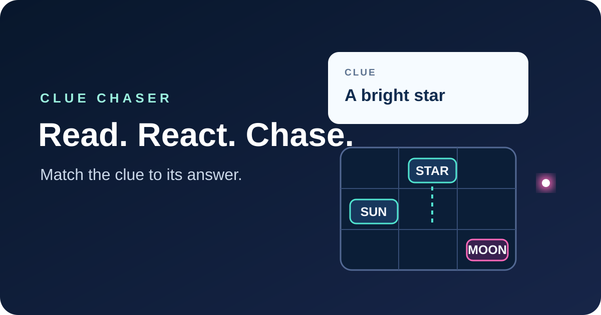

Clue Chaser – Can You Solve the Clues?
Read rapid-fire clues, identify matching answers, and chase them across a neon grid.

Every great puzzle begins with a question. Sometimes the answer is obvious; sometimes you need to connect clues, consider alternative meanings, and think beyond your first guess. Clue Chaser brings this process into an arcade word game.
Read each rapid-fire crossword clue and intercept the matching answer as it races down a neon vector grid. Choose the correct lane before the answer reaches the bottom, then keep chasing clues through the challenge.
Why Are Clue-Based Word Games Engaging?
The enjoyment of a clue-based game comes from discovering an answer. Interpret the information, identify possibilities, and narrow them down while staying aware of the game's movement.
- Critical thinking: Consider different interpretations of a clue.
- Vocabulary: Recall words and their meanings.
- Pattern recognition: Connect clue details to a possible answer.
- Concentration: Pay attention to both the clue and the moving answer trails.
- Satisfaction: Enjoy the moment when the answer clicks.
How to Play Clue Chaser
- Open the Clue Chaser game page.
- Read the displayed clue carefully.
- Think of a likely answer using the clue and your vocabulary.
- Identify the matching answer trail on the neon grid.
- Choose its lane before it reaches the bottom of the grid.
- Continue solving clues as the arcade challenge progresses.
Tips for Word Challenges
Read the clue carefully
A small detail in a clue can change its meaning, so consider the whole prompt before choosing.
Think of alternatives
Do not immediately settle on the first answer that comes to mind. Consider other words that fit.
Watch the game board
Clue Chaser adds a timing element, so keep track of the answer trails while you solve the clue.
Learn from mistakes
An incorrect choice can help you understand how the clue and answer connect.
Frequently Asked Questions
What is Clue Chaser?
Clue Chaser is an arcade word game where you solve rapid-fire clues and intercept matching answer trails on a neon grid.
Is Clue Chaser a word puzzle game?
Yes. It combines crossword-style clues and word recognition with fast arcade movement.
Where can I play Clue Chaser?
Access it directly from the Clue Chaser game page.
Ready to Chase the Next Clue?
A clue is waiting. Explore Clue Chaser and challenge your word-solving skills.